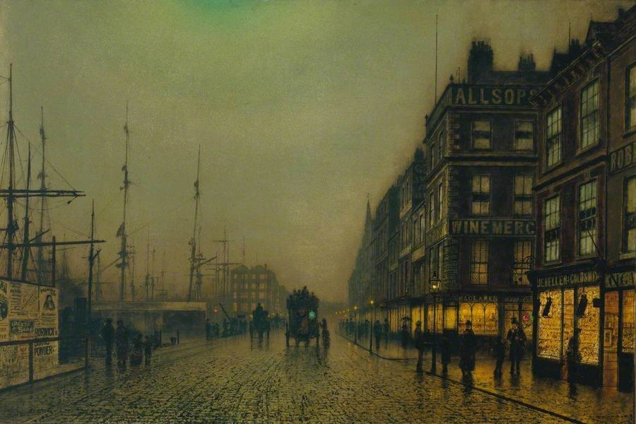
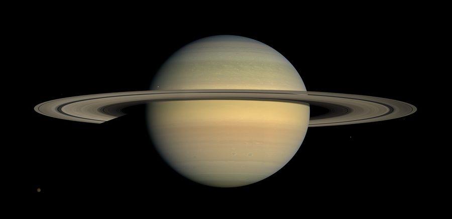

Машина · главное
Антропик идёт на биржу — со скидкой
Компания, которая ещё недавно объясняла, что не собирается взрослеть, на этой неделе назовёт диапазон оценки и на следующей начнёт торговаться. Инвесторы уже согласны на меньшее.
The Wall Street Journal сообщил в понедельник: Anthropic выходит на биржу. Диапазон оценки компания назовёт на этой неделе, торги начнутся в четверг или пятницу следующей — то есть 19 или 20 ноября.
Число обсуждают давно, и оно всё время уменьшается. Ещё неделю назад речь шла о полутора триллионах долларов. Теперь часть институциональных инвесторов давит вниз и от этой цели. А сама цель в полтора триллиона выросла из двух триллионов, о которых говорили несколько месяцев назад.
Для сравнения: OpenAI на прошлой неделе привлёк 11 миллиардов долларов при оценке в 1,25 триллиона. Просил двадцать.
Осторожность объяснима. Размещение такого размера идёт сразу после одного из крупнейших откатов Nasdaq, в самый разгар разговоров о том, что деньги, вложенные в вычислительные мощности, ещё никому не вернулись.
Издание подчёркивает главное: по оценке Anthropic инвесторы будут судить о силе всего ИИ-подъёма, а не только об одной компании.
О ценах на модели и токены в сообщении нет ни слова. Это отдельная история, и она начнётся после первых квартальных отчётов.
Коротко
- Что случилосьThe Wall Street Journal: Anthropic назовёт диапазон оценки на этой неделе и начнёт торги в конце следующей.
- Сколько просятЧасть институциональных инвесторов хочет оценку ниже 1,5 трлн долларов — цели, которая обсуждалась неделю назад.
- Откуда взялись полтораНесколько месяцев назад речь шла о 2 трлн; за неделю до сообщения — о 1,5 трлн.
- Для сравненияOpenAI: оценка 1,25 трлн после привлечения 11 млрд; искал 20 млрд.
- Чего в сообщении нетНи слова о ценах на модели и токены.
Что здесь факт, а что — обещание
Факт: сообщение The Wall Street Journal — компания назовёт диапазон на этой неделе и планирует торги в четверг или пятницу следующей.
Не факт: сама оценка. Диапазон — это не цена, а вежливая просьба, и она уже снижалась дважды.
Что это значит для счёта за токены: публичная компания обязана показывать выручку в отчётах раз в квартал, а инвесторы, купившие долю со скидкой, будут требовать маржу. Ждать дешёвых токенов из этого события не стоит. Предсказуемых цен — можно.
Книги
Второй материал · 5 минутКонец всего в восемьдесят один год
Майкл Джон Харрисон получил Букеровскую премию за роман о катастрофе, которую никто не сумел объяснить: пожилая тётя, племянник, рухнувший в саду самолёт и комок желе на пляже, который начинает говорить.

Вчера вечером в Лондоне Майкл Джон Харрисон получил Букеровскую премию 2026 года за роман The End of Everything. Ему 81 год — самый возрастной лауреат за всю историю премии. Жюри решило единогласно: шесть книг в шорт-листе, одна победила.
Харрисон — автор, который тридцать лет писал фэнтези, каким-то образом не считавшееся фэнтези: цикл «Верикониум», «Свет». Теперь у него 50 тысяч фунтов и главная литературная премия англоязычного мира. Каждому из шортлистеров — по 2 500 фунтов.
Место действия — южное побережье Англии, несколько десятилетий в будущем, спустя годы после катастрофы, которую автор и не пытается объяснить. Вторглись «iGhetti»: буква «i» намекает на что-то цифровое, но уверенности нет.
Главные герои — Филип Теннент и его пожилая тётя Марни. В саду лежит рухнувший самолёт, порядок держат патрули, и люди всё равно устраивают детские праздники и ходят в приморское кафе.
На пляже Филип находит «предмет»: комок желе, который быстро растёт, обретает речь и начинает указывать своим смотрителям, что делать.
Мэри Бирд, председатель жюри: «Это книга, которая переворачивает вас вверх ногами, вызывает сдержанную улыбку и — что удивительно при такой теме — оставляет тень оптимизма».
Одна из главных мыслей романа прямая: если катастрофа и случится, понять её будет невозможно, а старые правила работать перестанут.
Инструментарий
Заметка · 4 минутыСчёт приходит за киловатты
Разговор о дата-центрах выглядит спором о прогрессе, но едет он на электричестве: подключение к сети и генерация на месте злят людей по-разному, и пиаром это не лечится.
Джеймс О’Доннелл из MIT Technology Review проехал по Ошберну, штат Виргиния — «Аллее дата-центров», крупнейшему такому узлу в мире. Бетонные коробки с именами вроде Skybox и CloudHQ стоят вдоль всех дорог.
Позиция отрасли: протест против дата-центров — это будто бы про другое. Через два дня после промежуточных выборов главный по глобальным делам OpenAI Крис Лехейн написал, что дата-центры «стали заместителем общественного беспокойства о ценах, о корпоративной власти и о том, что люди теряют контроль над своим будущим». То есть культурная война.
Автор с этим не согласен. Электричество можно взять двумя способами: подключиться к сети или генерировать на месте, — и каждый злит людей по-своему. Средний дата-центр в этой части Виргинии — 54 мегаватта мощности.
Один из объектов, где был автор, принадлежит Equinix: дизельные генераторы стоят на случай аварии, а питание идёт от местной Dominion Energy, где значительная часть электричества делается из природного газа.
Вывод неприятный для всех, кто платит за токены: цена инференса упирается не только в чипы, но и в киловатты и в местную политику. Улучшить дата-центру репутацию можно. Отменить его аппетит — нет.
Небо
Заметка · 2 минутыПять лет до следующего закрытия
Картинка дня NASA: Луна проходит перед Сатурном. Планета никуда не исчезает — она пропадает из виду, и следующее такое покрытие, видимое с Земли, будет в 2031 году.

В картинке дня NASA от 10 ноября — Сатурн перед Луной. Планета, разумеется, никуда не девается: она пропадает из виду, когда Луна встаёт между Землёй и Сатурном. Такое покрытие видно не со всей Земли, а узкой полосой.
Снимок — цифровое соединение трёх кадров, сделанных на Сардинии после заката: сначала только Сатурн, потом две фотографии Луны с разной выдержкой. Яркая точка рядом с Сатурном — не его спутник, а звезда 85 Водолея: она ещё дальше Сатурна и на кадре просто оказалась рядом.
Само событие произошло в начале 2025 года: полоса видимости шла от Гренландии через Центральную Европу в Северную Африку. Картинка дня помечена 10 ноября 2026 года — это дата публикации, а не дата события.
Следующий раз, когда Луна закроет Сатурн и это будет видно с Земли, — 2031 год.
Тело
Заметка · 3 минутыПуть от кишки к привычке
Почему первая чашка чёрного кофе кажется горькой гадостью, а через год без неё не начинается утро. Ответ, похоже, лежит не во вкусе, а в медленном дофаминовом пути из пищеварительной системы в мозг.
Исследование Университета Калифорнии в Сан-Франциско вышло 4 ноября в Nature. Речь в нём о дофаминовом пути между пищеварительной системой и мозгом — медленном, в отличие от быстрых сигналов, которые срабатывают за секунды при виде любимого блюда.
Медленный путь отвечает на информацию изнутри тела. Именно он объясняет, как вкус, который мозг по умолчанию относит к неприятным, при повторении становится любимым: связь между вкусом и наградой переписывается опытом.
Практический вывод скромнее заголовка. Кофе не становится вкуснее — меняется то, что мозг ждёт после него. «Полюбить» и «разлюбить» здесь не свойство характера, а обучение.
Учёные добавляют: понимание механизма может в будущем дать способы менять пищевые привычки. Это пока обещание, а не метод; в статье речь о механизме.
Экран
Заметка · 3 минутыКто теперь охотник
Финальный трейлер «Бегущего по лезвию 2099»: репликанты у власти, у людей — обслуживающая работа, а беглянка Кора играет охотника, чтобы выжить.
Prime Video показал финальный трейлер мини-сериала «Бегущий по лезвию 2099». Премьера — на День благодарения.
Синопсис такой: пятьдесят лет после событий «Бегущего по лезвию 2049». Лос-Анджелес переродился, но не людьми. Кора, беглянка в последней попытке перестать бежать, берёт последнюю личность — бегущего по лезвию. В напарники ей достаётся репликант Олвен, которой остались считанные дни.
В трейлере у власти в городе репликанты, у людей — обслуживающие роли, и это не всем нравится. Кора работает изнутри системы против восстания репликантов, о причинах которого в трейлере только намекают.
Роли: Хантер Шафер — Кора, Мишель Йео — Олвен.
Тяжёлый звук
Заметка · 3 минутыНигредо, или чёрная стадия
Атлантская группа Cloak объявила четвёртый альбом — Above, Below, & Through, записанный между январём и апрелем 2026 года, — и первую песню, написанную нынешним составом.
Cloak из Атланты, играющие с 2013 года, объявили четвёртый альбом Above, Below, & Through. Это первый релиз группы на Metal Blade Records; выход назначен на 12 февраля 2027 года.
Вокалист и гитарист Скотт Тэйсом говорит, что песни — про пути между жизнью и смертью, про области между сном и сознанием, про переходы между зверем и человеком; тень и свет работают здесь как духовные проводники.
Первый сингл — «Nigredo — Initium». Нигредо — первая стадия алхимической работы, почернение материи, из которой потом выйдет что-то другое. По словам Тэйсома, это первая песня, которую нынешний состав написал вместе, и дверь, открывающая новый тёмный век.
Запись шла с января по апрель 2026 года. Дата — факт, обещание «самого плотного звука в истории группы» — реклама; до 12 февраля проверить её нечем.